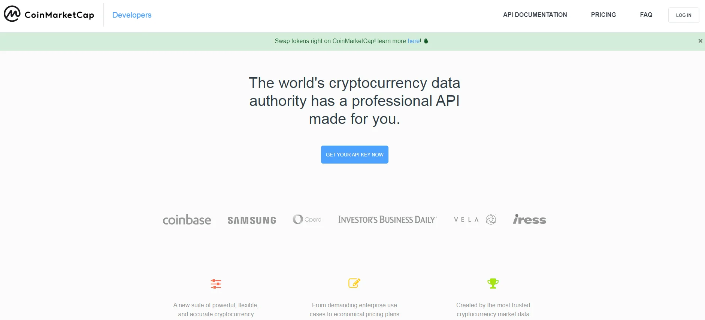

Retrieve Current Cryptocurrency Prices with Coinmarketcap API and Excel
Interested in tracking your cryptocurrency investments? Learn how to retrieve current cryptocurrency prices using the Coinmarketcap API and Excel spreadsheet. With just three essential pieces of information, you can access numerous cryptocurrency prices for free. Follow this guide to obtain your API key, retrieve the data, and save it to an Excel file.
If you're involved in cryptocurrency, and especially if you've chosen to buy some, then you might be very interested in this article. There's a financial saying that goes: "Never ignore a trend, it could make you rich and sometimes very wealthy." Some of us have chosen not to ignore the trend and have bought some (always with money that we have surplus and don't need***).
Well, my top priority is to have immediate access to my total assets at any given time. To accomplish this, I devised an Excel spreadsheet and filled in the quantity of each currency I possess. Once I obtained the missing values, my total capital was at my fingertips in a flash.
Thankfully, there's a website that manages cryptocurrency prices and acts as a valuable partner for anyone keen on the world of cryptocurrencies: Coinmarketcap. They offer an API that's entirely free in the "free" version, enabling users to access current prices of numerous cryptocurrencies. All it takes is to create a key and use the code provided in this article.
Let's start with the key. First, you need to go here and create an account. Once you've done that, click on the "GET YOUR API KEY NOW" button. After your key is issued, copy it to a txt file and proceed.
Alright, let's shift our focus to the code. To retrieve the present price for every cryptocurrency, you'll need to provide three essential pieces of information.
1. headers. Here, you input the API key you just obtained, along with the file format you want the data to be returned in (JSON).
2. params. Here, you'll enter the symbols you're interested in and the currency pair. Since I've made all my purchases in EUR, I'll select that. As for the symbols, you'll go to this address and select the ones you want to track.
3. url. This is standard - it's the API address 'https://pro-api.coinmarketcap. com/v1/ cryptocurrency/quotes/latest'
The request you make will return a JSON file in the following format:
{'data': {'BTC': {'circulating_supply': 18867481,
'cmc_rank': 1,
'date_added': '2013-04-28T00:00:00.000Z',
'id': 1,
'is_active': 1,
'is_fiat': 0,
'last_updated': '2021-11-08T15:27:02.000Z',
'max_supply': 21000000,
'name': 'Bitcoin',
'num_market_pairs': 8297,
'platform': None,
'quote': {'EUR': {'fully_diluted_market_cap': 1189612564080.0137,
'last_updated': '2021-11-08T15:27:34.000Z',
'market_cap': 1068809164292.4241,
'market_cap_dominance': 43.2794,
'percent_change_1h': 0.0415769,
'percent_change_24h': 5.45204024,
'percent_change_30d': 19.07865819,
'percent_change_60d': 40.03057059,
'percent_change_7d': 5.11858583,
'percent_change_90d': 45.00142545,
'price': 56648.217337143426,
'volume_24h': 30440975711.61554,
'volume_change_24h': 40.8923}},
'slug': 'bitcoin',
'symbol': 'BTC',
So, you need to find the key value called "price" and retrieve its value, just like you would with any dictionary. Of course, you can retrieve any useful information, such as the 24-hour or 90-day change, and so on.
Below is the complete code. You need to change the API key and the location where you want to save the Excel file. In this example, in addition to the current value, I am also retrieving the 24-hour change for the 7+1 cryptocurrencies I am tracking.
*** Please note that this is not investment or financial advice. For investments, you should do your own research and follow the instructions of certified individuals.
import requests
from datetime import datetime
from openpyxl import load_workbook
import pprint
# Get data
headers = {
'X-CMC_PRO_API_KEY': 'YOUR API KEY',
'Accepts': 'application/json'
}
params = {
'symbol': 'doge,matic,xlm,vet,trx,shib,hot,btc',
'convert': 'EUR'
}
url = 'https://pro-api.coinmarketcap.com/v1/cryptocurrency/quotes/latest'
prices = requests.get(url, params=params, headers=headers).json()
# pprint.pprint(prices) # εδώ μπορούμε να δούμε τι τυπώνει το request
doge = prices['data']['DOGE']['quote']['EUR']['price']
matic = prices['data']['MATIC']['quote']['EUR']['price']
xlm = prices['data']['XLM']['quote']['EUR']['price']
vet = prices['data']['VET']['quote']['EUR']['price']
trx = prices['data']['TRX']['quote']['EUR']['price']
shib = prices['data']['SHIB']['quote']['EUR']['price']
hot = prices['data']['HOT']['quote']['EUR']['price']
doge_perc_change = prices['data']['DOGE']['quote']['EUR']['percent_change_24h']
matic_perc_change = prices['data']['MATIC']['quote']['EUR']['percent_change_24h']
xlm_perc_change = prices['data']['XLM']['quote']['EUR']['percent_change_24h']
vet_perc_change = prices['data']['VET']['quote']['EUR']['percent_change_24h']
trx_perc_change = prices['data']['TRX']['quote']['EUR']['percent_change_24h']
shib_perc_change = prices['data']['SHIB']['quote']['EUR']['percent_change_24h']
hot_perc_change = prices['data']['HOT']['quote']['EUR']['percent_change_24h']
btc_perc_change = prices['data']['BTC']['quote']['EUR']['percent_change_24h']
# Write to excel sheet
book = load_workbook(r'YOUR EXCEL DESTINATION ON DISK') # π.χ 'E:\My_files' κλπ
sheet = book.active
sheet['c2'] = trx
sheet['c3'] = xlm
sheet['c4'] = hot
sheet['c5'] = vet
sheet['c6'] = shib
sheet['c7'] = matic
sheet['c8'] = doge
sheet['d2'] = trx_perc_change/100
sheet['d3'] = xlm_perc_change/100
sheet['d4'] = hot_perc_change/100
sheet['d5'] = vet_perc_change/100
sheet['d6'] = shib_perc_change/100
sheet['d7'] = matic_perc_change/100
sheet['d8'] = doge_perc_change/100
sheet['d10'] = btc_perc_change/100
now = datetime.now()
time = now.strftime("%H:%M:%S")
day = now.strftime('%d/%m/%Y')
sheet['b15'] = time
sheet['b17'] = day
book.save(r'YOUR EXCEL DESTINATION ON DISK')
book.close()
print('\nBook was successfully updated!..')